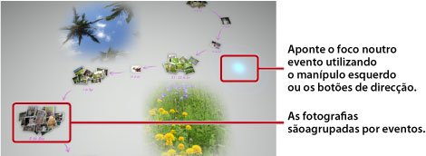

Ver fotografias
Quando o Photo Gallery é iniciado, todas as fotografias guardadas no armazenamento do sistema PS3™ são automaticamente analisadas e agrupadas por eventos. As fotografias são agrupadas em eventos com base na data e hora em que foram tiradas.
Seleccionar eventos
Mude entre as fotografias ou entre os eventos utilizando o manípulo esquerdo ou os botões de direcção. É possível seleccionar várias fotografias ou vários eventos premindo o botão  com cada selecção.
com cada selecção.

Alterar a forma como as fotografias são apresentadas
Para alterar a forma como as fotografias são apresentadas, seleccione grupos ou eventos e, em seguida, prima o botão  . O ecrã muda conforme as imagens apresentadas. Para regressar ao ecrã de visualização anterior, prima o botão
. O ecrã muda conforme as imagens apresentadas. Para regressar ao ecrã de visualização anterior, prima o botão  .
.
Nota
Quando uma fotografia é apresentada no modo de ecrã inteiro, é possível aceder ao painel de controlo utilizado na categoria  (Fotografia) do ecrã XMB™ premindo o botão
(Fotografia) do ecrã XMB™ premindo o botão  . É então possível utilizar as opções disponíveis no painel de controlo das opções na fotografia apresentada.
. É então possível utilizar as opções disponíveis no painel de controlo das opções na fotografia apresentada.
Ver fotografias como uma apresentação
Para reproduzir uma apresentação das fotografias, seleccione uma lista de reprodução ou um evento em [Área da Biblioteca], prima o botão e, em seguida, seleccione  (Apresentação). No ecrã que é apresentado, defina as opções de apresentação descritas a seguir e seleccione [Iniciar].
(Apresentação). No ecrã que é apresentado, defina as opções de apresentação descritas a seguir e seleccione [Iniciar].
| Estilo da Apresentação | Seleccione a forma como pretende que as fotografias sejam apresentadas na apresentação. |
|---|---|
| Velocidade da Apresentação | Seleccione a velocidade da apresentação. |
| Ordenar | Seleccione a ordem das fotografias. |
| Música da Apresentação | Seleccione a música a reproduzir em fundo durante a apresentação entre o conteúdo musical fornecido com a aplicação Photo Gallery. |
Seleccione a música a reproduzir em fundo durante a apresentação na categoria  (Música) do ecrã XMB™. (Música) do ecrã XMB™. |
Notas
- Durante uma apresentação, é possível aceder ao painel de controlo das opções da categoria (Fotografia) premindo o botão . É então possível utilizar as opções disponíveis no painel de controlo das opções na apresentação.
- Quando as fotografias são apresentadas em [Área da Biblioteca], pode seleccionar [Semelhanças] em [Ordenar] para ordenar as fotografias com base na semelhança das imagens.
Alterar a música de fundo
É possível alterar a música que é reproduzida em fundo enquanto visualiza as fotografias. Prima o botão PS no comando sem fios para visualizar o ecrã XMB™, vá para (Música) e, em seguida, seleccione o ficheiro de música que pretende reproduzir.
Notas
- Para alterar a música de fundo de uma apresentação, seleccione a música que pretende reproduzir antes de iniciar a apresentação.
- Quando estiver a utilizar a Photo Gallery, se seleccionar uma faixa de música que esteja guardada num suporte de armazenamento como música de fundo e, em seguida, iniciar uma apresentação, a faixa pode não voltar a ser reproduzida depois de a apresentação terminar.